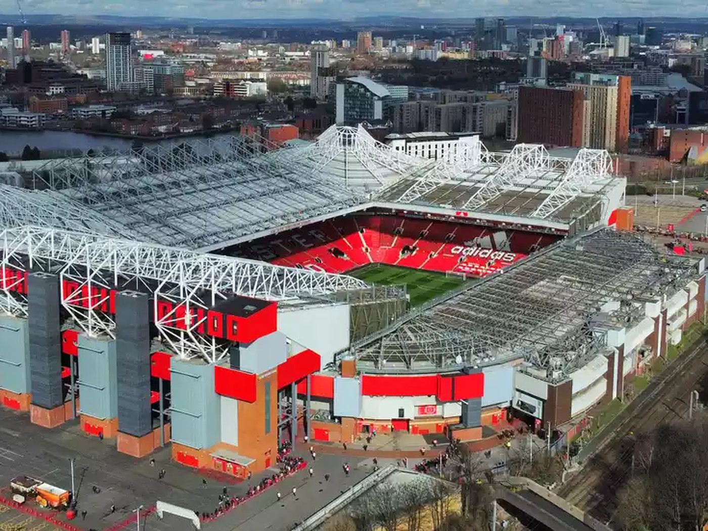

Manchester United vs Arsenal: A Night to Remember
March 10, 2025 | By Sports Correspondent
Last night’s clash between Manchester United and Arsenal was nothing short of spectacular. A high-intensity match filled with drama, skill, and last-minute heroics kept fans on the edge of their seats.
Key Highlights
- Early Lead: Arsenal dominated the first half with a stunning goal from Bukayo Saka.
- United’s Comeback: Bruno Fernandes equalized with a perfectly placed strike in the second half.
- Last-Minute Drama: Marcus Rashford sealed the victory with a breathtaking goal in stoppage time.
Post-Match Reactions
Managers and players shared their thoughts after the match. Erik ten Hag praised United’s resilience, while Mikel Arteta expressed disappointment over the missed chances.
"It was a great team effort. We showed character and never gave up." – Bruno Fernandes
What’s Next?
Both teams will now shift their focus to upcoming fixtures. With the title race heating up, every point matters!